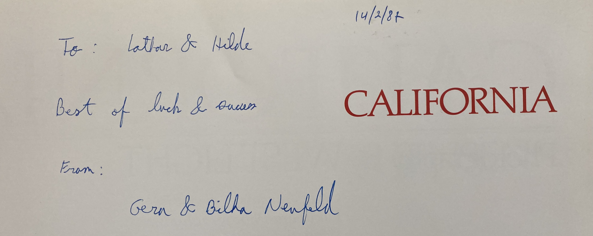

Gera in seinem Labor in Haifa, Israel
1984–1987
„Was hat dein Vater im Krieg gemacht?“
Das war eine der ersten Fragen, die Gera mir stellte, nachdem ich 1984 ins Labor gekommen war und Denis mir den Schreibtisch am Fenster zugeteilt hatte. Mit Blick auf den Pazifik. Gera saß links neben mir. Ich war völlig unvorbereitet und wusste zunächst gar nicht, worauf die Frage hinauslief.
„Was soll er gemacht haben? Er war Soldat. In Frankreich und Russland.“
Für mich war das keine besonders bemerkenswerte Antwort. Natürlich wusste ich, was im Krieg geschehen war. Und aus den Tagebüchern meines Vaters wusste ich auch ziemlich genau, was er als damals 27-jähriger Mann erlebt hatte. Erst allmählich verstand ich, weshalb Gera die Frage überhaupt gestellt hatte.
Seine Großeltern hatten in Plettenberg im Sauerland gelebt. Die Familie wurde von den Nationalsozialisten verfolgt und später in Auschwitz ermordet. Diejenigen, die flüchten konnten, gelangten nach Palästina und später nach Israel. Gera wuchs in Haifa auf, studierte Biologie und war wie ich als Postdoktorand bei Denis gelandet.
Unser Verhältnis war anfangs distanziert. Nicht von meiner Seite. Aber von seiner. Er mochte Deutsche nicht. Und das war nach seiner Familiengeschichte verständlich. Er sagte mir mehrfach, dass er niemals deutschen Boden betreten werde. Wir saßen dennoch jeden Tag nebeneinander.
Wir machten Experimente zusammen, diskutierten Ergebnisse, halfen einander und veröffentlichten gemeinsam. Daneben führten wir lange Gespräche über Israel, Deutschland und die Geschichte unserer Länder. Nicht immer harmonisch. Ich erinnere mich noch gut an Diskussionen über den Libanonkrieg und das Massaker von Beirut 1982. Gera verteidigte die israelische Position leidenschaftlich. Ich sah manches anders. Wir waren uns meistens nicht einig.
Aber genau das spielte am Ende keine Rolle. Mit der Zeit lernten wir einander kennen. Oder vielleicht genauer gesagt: Gera lernte mich kennen. Er merkte, dass ich weder für die Verbrechen des Dritten Reiches verantwortlich war noch die Ansichten der Generation meiner Großeltern teilte. Und ich begann besser zu verstehen, wie tief die Erfahrungen seiner Familie bis in unsere Gegenwart hineinwirkten.

So entstand langsam Vertrauen. Ich werde nie vergessen, wie er mir bei meiner Abschiedsfeier bei Ulli in San Jose einen Bildband über Kalifornien schenkte. Mit einer persönlichen Widmung. Für Außenstehende mag das unspektakulär wirken. Für mich war es das nicht. Es war sein Zeichen dafür, dass wir zueinander gefunden hatten.
Unsere Geschichte ging anschließend sogar weiter.
Gera kehrte nach Israel zurück und wurde Wissenschaftler und später auch Dekan am Technion in Haifa. Später schlug er ein gemeinsames Forschungsprojekt im Rahmen der German-Israeli Foundation vor. Wir setzten das Projekt um. Und irgendwann kam er tatsächlich nach Deutschland und besuchte mich. Der Mann, der mir Jahre zuvor erklärt hatte, niemals deutschen Boden zu betreten, stand plötzlich in meinem Büro. Und meinte, dass er seine Meinung über die Deutschen geändert habe.
Vielleicht war das die eigentliche Erkenntnis unserer gemeinsamen Zeit. Dass man Geschichte nicht ändern kann. Aber dass Menschen trotzdem aufeinander zugehen können. Und manchmal sogar Freunde werden.
Damals ahnte ich noch nicht, wie sehr mich dieses Thema noch beschäftigen würde. Später besuchte ich Sachsenhausen, Buchenwald und Auschwitz. Ich arbeitete in deutsch-israelischen Projekten mit, wurde Kuratoriumsmitglied eines deutsch-israelischen Vereins für krebskranke Kinder und lernte viele Juden in Israel und Deutschland kennen. Einige wurden Freunde. Andere nicht. Mein Blick auf Deutsche, Juden, Israel und die gemeinsame Geschichte wurde differenzierter.
Vielleicht hatte alles an jenem Tag begonnen, als Gera mich fragte:
„Was hat dein Vater im Krieg gemacht?“